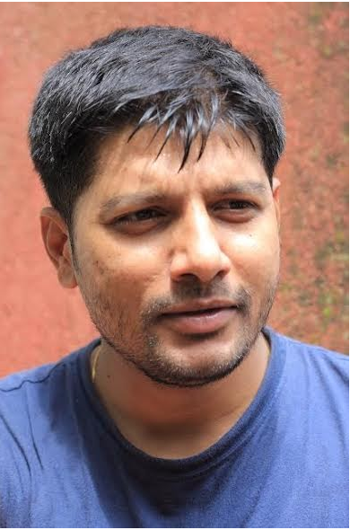

“The only way to end the violence and restore peace to the border region is through a complete transformation by helping children grow rich socially, culturally, religiously, academically and spiritually, so that we can bring good citizens to this one world who could ultimately prove supportive in the construction of greater society.” - Adhik Kadam
Conflicts and militancy in Kashmir region affects the daily lives of the commoners living here. Whoever is the reason behind the sinister agenda that leads to such situation prevailing in the crown of our country, it is the Kashmiris who ultimately have to pay. Worst sufferers of such happenings are the children. Their studies are affected, their schools shut down, and the militancy has left more than 200,000 children orphaned.
Mr Adhik Kadam is the director and co-founder of Borderless World Foundation (BWF). He has saved hundreds of girls in the heart of conflict zone in Kashmir. The organization has also brought emergency medical services in the form of ambulances to an area where too many die on the way to a hospital and has tapped into a nationwide network of supporters to bring in supplies and skilled medical professionals from around the country. Adhik has been doing this work in a hostile environment since 1999 when he was just 19 years old. He is no ordinary social worker. Kadam's social work covers the healthcare, education, empowerment of Women, Women hygiene, art and culture, and poverty alienation at the grassroots levels. Kadam hopes to restore a 'culture of faith' to the communities in Kashmir.
In this interview, we ask him about the current situation in Jammu and Kashmir and what his message is for the young people who look up to him and are inspired by him.
Interview with Mr. Adhik Kadam
 To an outsider how will you define Jammu and Kashmir? The grassroots reality, the rich heritage, the land of temples, heaven of nature and the diversity of people living here?It is not a place to be defined. It is to be described. Jammu is a land of temples. Kashmir valley, rightly known as a Paradise on Earth, presents a very strange experience at its first sight, one that is breathtaking and forces one to believe in the creation of the place meant for saints and sages. It is called Rishi Waer as well.
Ladakh also provides us with a unique experience with the Nature’s special efforts in creating and crafting a place so unique and amazing to the viewer.People in all three regions are simple, God loving, honest and sincere to the core and extremely hospitable.
I am involved with the fall out of crisis. Conflict can be a political one. It can have other explanations as well.
Consequences are social and human. The loss of human life causes untold suffering. Some sections of society become more vulnerable. They need attention, protection and care. There comes the role of the society.
I think all the saner and untamed voices in Kashmir feel pained with all that is happening around them. They yearn for peace.
Voices tamed by the temptations of various dimensions appear to be dominated and intimidated too. These get undue attention. Voices of peace go unheard and are lost in the din. It is difficult to say if the voices of pain get any genuine expression even, much less any representation.
Kashmir wants peace and tranquility to return. Kashmiris want an end to the hostilities and return of their Kashmir to them. Kashmir has been snatched from them.
One section of the Kashmiris are out of valley and yearning to return to their homeland. Kashmiris living at home feel alien in their own homes. All want their Kashmir back.
I do not agree that the conflict created by the neighbouring country has confused every Kashmiri mind. To consider that the confusion cannot be removed is not correct. To be able to do that, the intentions of the hostile neighbour need to be understood not only by a common Kashmir but all Indians. As a student of political science, I feel the politics of subcontinent leading leading to the partition of our country is responsible for the situation in Kashmir. We need to have a concrete national response to this politics and force our neighbour to stop interfering with our affairs.
They tried to annex the state of J&K by military force. They failed. They fuelled hatred. It did not pay them.
The rejection of their theory by the Kashmiri majority on more than one occasion is sen to be the reason for their hostility towards people of Kashmir.
The neighbouring country is also silently seen by some people to be avenging their military and political defeats by unleashing the ongoing turmoil.
I do not agree that journalism is under any threat. I also do not subscribe to your assertion of backlash, death, threats etc in journalism, I believe, is evolving and accepting now, than ever before, that there is no scope for sensationalising the issues at the cost of national pride and integrity.
Journalism also finds its expression through social media now. It is, therefore, difficult to present any view which lacks the support of the facts.
People want the factual position before position to be placed before them in the right and positive manner. People want journalism not jingoism in the name of journalism. They want facts to be placed before them as they are and as they exist. They do not like any distortions.
As the people have now access to the real time information through alternate sources as well enabling cross checks, journalism needs to learn to accommodate all the divergent views on an issue rather than feeding their readers or viewers with distorted and piecemeal information.
I don’t agree that India is intolerant. We should be knowing what tolerant means in its entirety before allowing anyone to question on our tolerance. The very idea of India reflects our tolerance. We are evolving as a string nation. We have witnessed so many upheavals but not allowed those to stop our evolution as a strong and vibrant nation. And our mission should be to make ourselves more strong and self-reliant in the years ahead.
What is the bone of contention between these two neighbours? Please comment on recurrent infiltration, ceasefire violations and propagandist fanning of people’s emotions and India’s stance on it all. What should India do according to you?Our neighbouring country could not digest that the concept of two nation theory, on the basis of religion, which became the basis for their creation as a separate country, could be rejected by the people and their leaders in Kashmir belonging to the same faith. Their resolve to avenge the defeat the very idea of their creations and repeated failure in that is, according to me, the bone of contention.
India should, according to me, do all that is possible to seek vacation of our territory occupied by them with aggression in keeping with the wishes and aspirations of the people of India as reflected in a resolution unanimously adopted by our Parliament.
The neighbouring country needs to understand that the partition of the country that was initiated by their leaders assumed finality with their creation as a separate country. It cannot be permitted to be reopened under any belief, guise of threat.
The question unfortunately seeks to suggest that we, as a nation, are passing through any threatening times. I, as a humble social worker, do not subscribe to this view point. I repeat that we continue to evolve and are learning to move beyond the status quo, wherever needed. Every one of us should attempt to be an icon to others in his own right and look to himself to show an example.
Acceptance, tolerance, patience, broadmindedness becomes part of life of those who knows how to use knowledge and information to evolve. Such evolved humans, and society at large can overcome weaknesses and transfer it into strength.
My message to my young friends across the country would be not to allow any negativity to guide them in their journey to evolution but to learn from that and convert that into the strength to help their own evolution and that of the society at large.
This interview was made possible under the guidance of my Professor, Dr. Quleen Kaur Bijral-HOD humanities department, IIT Jammu.
Columnist: Vaidehi Som
Interviewers: Vaidehi Som and Rohit Davas, students, IIT Jammu